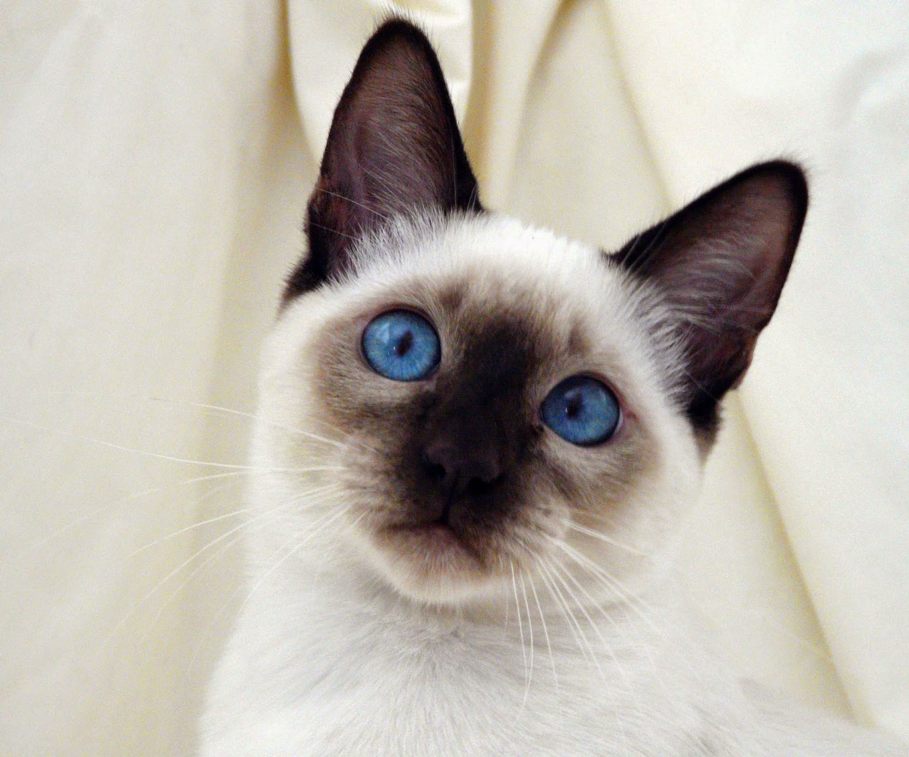

Visão Geral
O gato doméstico, cientificamente conhecido como Felis catus, é um mamífero carnívoro da família Felidae.
São conhecidos por sua independência e habilidades de caça, além de serem animais de estimação populares em todo o mundo.
Raças
Existem várias raças de gatos, cada uma com características únicas em termos de aparência e temperamento.

Siamês
O Siamês é conhecido por sua personalidade extrovertida e vocalização única.

Maine Coon
O Maine Coon é uma das maiores raças de gatos domésticos, conhecido por seu temperamento gentil e pelagem exuberante.
Comportamento
Os gatos são animais conhecidos por sua curiosidade, agilidade e habilidades de caça. Eles são animais territoriais e podem exibir comportamentos como marcação com urina e arranhões para delimitar seu território.
Curiosidades
- O gato doméstico é descendente do gato selvagem africano.
- Os gatos têm a capacidade de fazer mais de 100 sons vocais diferentes.
- Os gatos dormem em média 12 a 16 horas por dia.